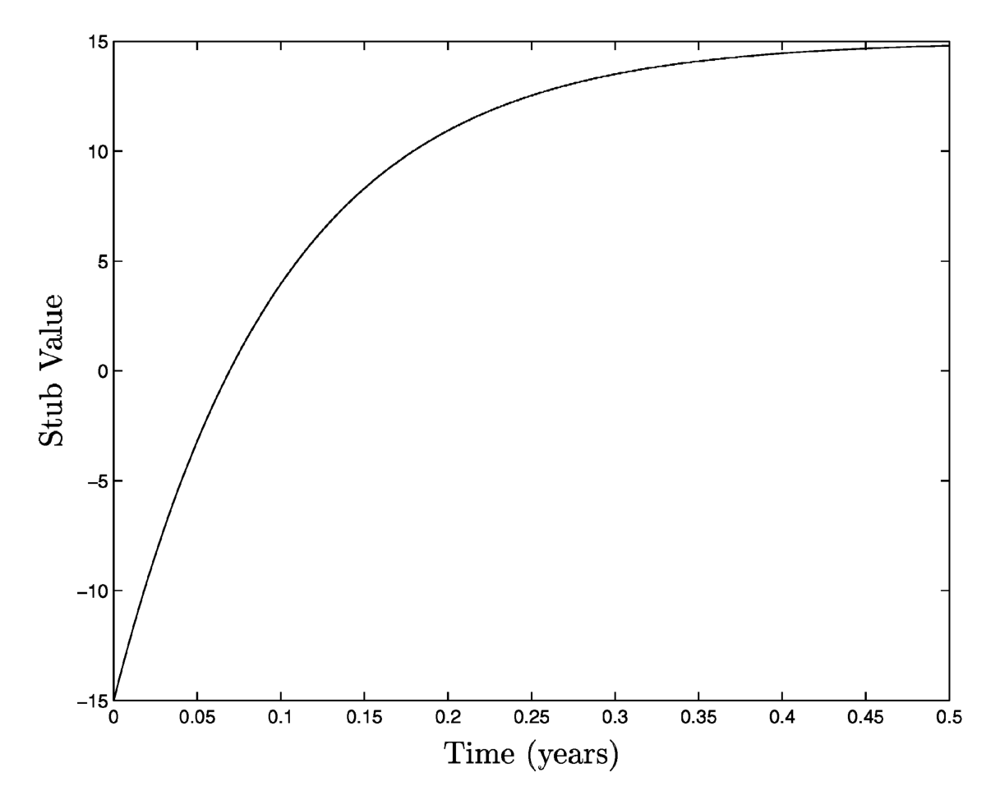
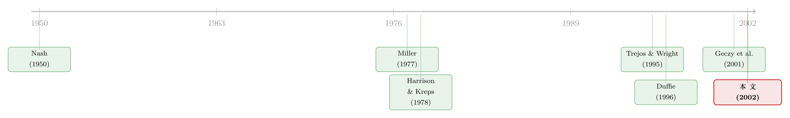

贵过所有人心里的价：一张「借不到的券」如何把价格顶上天
本文读的是 Duffie, Gârleanu & Pedersen (2002, Journal of Financial Economics)：当做空一只证券必须先「找到」愿意借券的人、再「讨价还价」谈一笔借券费时，证券的价格不仅会被顶高，而且可以高过市场上所有投资者（包括最乐观那一个）对它的估值——因为今天的买家愿意为「将来把券借出去收费」这件事提前付钱。价格随后会缓慢下跌，借券费随做空头寸的累积而递减，极端时甚至能压出负的「残值」（negative stub value）。
1 一个让人不舒服的事实
先讲一件 2000 年的真事。
3Com 把它的子公司 Palm 拆分上市，先卖掉一小部分股份，并宣布日后把剩下的 Palm 股票按比例分给 3Com 股东——每一股 3Com，将来能换到大约 1.5 股 Palm。这是一道小学算术题：3Com 的市值，至少应该等于它手里那堆 Palm 的市值，再加上 3Com 自己「别的业务」的价值。换句话说，把 3Com 市值减去它持有的 Palm，剩下的那块——业内叫残值（stub value）——怎么算都该是正的。
可市场偏偏算出了一个负数。Palm 上市当天，按 3Com 持股折算出的 Palm 价值，比整个 3Com 的市值还要高。账面上，3Com「别的业务」加上一大笔现金，被市场标了一个负的价。
这显然违背了有限责任和最起码的「不套利」直觉。于是 Lamont and Thaler (2001)、Mitchell, Pulvino and Stafford (2002)、Ofek and Richardson (2001) 都盯上了这类例子，把它当作「市场会犯错」的铁证。它们的解释也很直接：想纠正这个错误，你得做空贵的那个（Palm），做多便宜的那个（3Com）。可 Palm 刚上市，流通盘极小，借不到券——套利者站在「免费午餐」面前，却伸不出手。
这就是本文的起点。但它想说的，比「市场犯错」更深一层。
本文的野心，是不假设任何人非理性。它要在一个所有人都精明、都理性的世界里，把「价格高过所有人的估值」「负残值」这些看似荒唐的现象，当成均衡结果推导出来。关键的摩擦，不是愚蠢，而是「借券」这件事本身要花时间、要谈价钱。
2 先把「做空」这件事看清楚
我们平时说「做空」，仿佛是点一下鼠标就能完成的事。本文花了一整节（Section 2）提醒你：不是的。
做空一只股票的标准动作是：先借来这只股票，卖掉；将来再买回来还给出借人，赚取（净借券费后的）价格跌幅。问题全卡在「借」这个字上。一个对冲基金想做空，得先让券商去「locate」——在自己的库存里找、在客户账户里找、找托管行、找其他潜在出借人。天然的出借人是保险公司、指数基金、养老金这些长期 buy-and-hold 的大户。一份《金融时报》当年的报道把这套流程形容为「labor-intensive，因为合适的券可能要花时间才能找到」。
碰上业内所谓「hard to locate」的券，券商常常circle 不到客户要的数量，只能给个「partial fill」（部分成交），有时要等上好一阵。一只券好不好借，取决于它的市值、流通盘（float）、是否进了指数、流动性、持股集中度，以及有没有 IPO、并购、拆分这类「特殊事件」。
读到这里，一个自然的问题浮上来：既然「借券」是一桩要搜寻、要议价的生意，那么借券费就不是天上掉下来的常数，而是供需双方谈出来的价。而一旦借券费是内生的、会随时间变化的，它就必然会反过来渗进股票本身的价格里。
这正是全文的枢纽：把借券市场的搜寻—议价结构，焊进资产定价。
3 一道「会算账」的脑筋急转弯
在写下任何微积分之前，作者先用一个粗糙但极其传神的例子，把全部直觉讲透了。我把它原样搬过来，因为它实在太好。
设想：60 个乐观者，每人给这只证券估值 100；20 个悲观者，每人估值 90。流通盘是 10 股。悲观者想做空，分两轮各借走 10 股卖给乐观者，最终做空头寸 20（假定每人最多持一股，多空皆然）。
现在从后往前倒推。假设出借人握有全部议价权：
- 两轮做空都完成后：再没有人想借券了，借券费归零，价格回到
100（乐观者的估值）。 - 最后一轮借券时：出借人能从做空者身上榨出多少？做空者卖空能赚的是
100 - 90 = 10，所以他愿意付的借券费正是10。乐观买家预见到，自己买了这股之后能把它借出去、收到10的费，于是他愿意出10 + 100 = 110来买。 - 第一轮借券时：此刻做空者面对的价格是
110，他卖空能赚110 - 90 = 20，于是愿付借券费20。乐观买家预见到将来能收这20，于是初始价格被顶到120。
看出规律了吗？在任意时点，价格被顶高的幅度，等于「剩下还会发生几轮借券」乘以「意见分歧」100 - 90 = 10。每完成一轮做空，未来的费就少收一笔，价格就往下掉一截。
请注意这个 120。市场上最乐观的人，对未来分红的估值也只有 100。可初始价格是 120——它高过了在场每一个人对「这家公司值多少钱」的判断。多出来的 20，不是谁犯了傻，而是「把券借出去收费」这项未来权利的现值。这就是本文要正式证明的那个反直觉结论。
接着，一个自然的问题是：把「两轮」换成连续的时间、把「60 个 / 20 个」换成一整条连续的意见谱，把「出借人独占议价权」换成一般的讨价还价——这套直觉还站得住吗？价格、借券费、做空头寸又会怎样随时间共同演化？这就要请出模型了。
4 模型：把搜寻、议价、定价焊在一起
这是一篇有正经理论模型的论文，我们把它的骨架一步步搭出来。它的定价方法承袭自作者们自己的 Duffie, Gârleanu and Pedersen (2000)，而搜寻—议价的结构，则来自货币理论里的 Trejos and Wright (1995)。（同一套「搜寻—议价」武器，作者后来还用来给整个场外市场定价，参见《价格里那道折扣，量的是「找不到买家」的时间》。）
4.1 设定
一只资产，在一个随机的「清算时刻（day of reckoning）」\(\tau\) 之前不付任何红利。\(\tau\) 服从到达强度为 \(\gamma\) 的泊松分布；到了 \(\tau\)，真实价值 \(V\) 向所有人揭晓。在那之前没有任何关于 \(V\) 的信息释放。流通盘固定为 \(F\)。
投资者是一个连续谱 \(s \in [0,1]\)，风险中性、无时间偏好。类型 \(s\) 的人对最终价值的期望是 \(V_s = E_s(V)\)，且 \(V_s\) 关于 \(s\) 严格递增——类型 1 最乐观，类型 0 最悲观。各类型的质量由测度 \(\mu\) 给出。每个人最多持有 $+1$ 或 $-1$ 股（这是对风险/信用限额的简化替代）。
交易在一个 Walras 市场里以价格 \(P_t\) 出清。但你只能卖出自己拥有或借来的股票。要借券，你得先以强度 \(\lambda\) 随机匹配到一个持券人，然后双方就借券费率 \(R_t\) 讨价还价。作者先刻画「只有最悲观者（\(s=0\)）才做空」的均衡，并在 Section 3.6 证明：只要有摩擦性的做空成本、且悲观者质量足够大，这个限制不失一般性。
4.2 做空头寸怎样累积
时刻 0 时做空头寸为零，流通盘 \(F\) 被 Walras 市场分给最乐观的那批人。随着时间推移，悲观者陆续匹配到出借人、借券、卖空，这些股票被「依次不那么乐观」的买家接走。于是定义两个量。
时刻 \(t\) 的总多头是 \(F + S(t)\)，因此「下一个」边际买家的类型 \(s(t) = s^*(S(t))\) 由下式定出：
$$ s^*(s) = \inf\{s : \mu([s,1]) < F + s\}. \tag{1} $$
仍未建仓的悲观者数量（unfilled shorters）为
$$ U(S(t)) = \mu(\{0\}) - S(t), \tag{2} $$
即悲观者总量减去已有的做空头寸。做空头寸的累积速率，取决于「未建仓悲观者」与「持券人」之间的接触率——它正比于匹配强度 \(\lambda\)、未建仓悲观者质量 \(U(S(t))\)、以及流通盘 \(F\)：
$$ S'(t) = \lambda F\, U(S(t))\, \mathbf{1}_{\{F + S(t) < \mu((0,1])\}}. \tag{3} $$
那个示性因子，是为了在「所有乐观者都已持券」之后让做空停下来。这条常微分方程，连同 (1)，就把均衡的做空头寸与证券配置完全定了下来。直觉很干净：做空头寸单调上升，但越往后、未建仓的悲观者越少，累积越慢——头寸是「逐渐」堆起来的，不是一蹴而就。
4.3 一份借券合约值多少钱
由于在均衡里借券合约不会在 \(\tau\) 之前被终止，时刻 \(t\) 的借券人面对的成本，等于从 \(t\) 到 \(\tau\) 这段时间里付给出借人的全部未来借券费的现值 \(L_t\)。利用 \(P(\tau > u \mid \tau > t) = e^{-(u-t)\gamma}\)，
这是全文最该盯住的一个表达式。它说：一只券今天「特殊」与否，由它未来一整条借券费路径决定。
4.4 反转：价格高过所有人的估值
现在把两块拼起来。一个边际买家为什么愿意买？因为他既享有自己对分红的估值 \(V_{s(t)}\)，又预期自己持券后能在未来把券借出去、收取那笔费现值 \(L_t\)。在均衡里，价格等于边际买家的保留价值：
$$ P(t) = V_{s(t)} + L_t. $$
于是真正关键的一步出现了。在静态分析里（Duffie (1996)、Krishnamurthy (2001)、D'Avolio (2001)），均衡中总得有人持券而不借出，这意味着价格至多等于某些买家的估值——价格再高也高不过在场买家。可在动态经济里，\(L_t > 0\) 对每一个持券人都成立：哪怕你此刻没在借券，你也预期将来某天会借出去收费。于是 \(P(t) = V_{s(t)} + L_t\) 可以高过所有投资者的估值 \(\max_s V_s\)。
这正是那个 120 的严格版本。它还顺带给出一个更尖锐的论断：「有限做空」下的价格，初始时高于「完全禁止做空」下的价格——因为禁止做空就抹掉了 \(L_t\) 这块借券期权的价值。这与 Miller (1977) 那条「禁止做空 → 高估」的经典直觉方向相反，是本文最容易被误读、也最值得玩味的地方。
别把本文和 Miller (1977) 搞混。Miller 说的是「做空被禁止，于是悲观者出不了声，价格被乐观者单方面顶高」。本文说的是「做空被允许但要付费，于是买家为『将来收费』预付，价格被顶得更高」。两者都让价格偏高，但机制截然不同——一个靠悲观者沉默，一个靠乐观者算账。
至于议价：当做空者匹配到持券人，双方按 Nash 议价（Nash (1950)、Binmore, Rubinstein and Wolinsky (1986)）瓜分卖空盈余，借券费持续重新谈判直到一方终止合约。出借人议价权越强，\(R_t\) 越高，\(L_t\) 越大，价格被顶得越高。把「出借人独占议价权」一般化之后，前面那道脑筋急转弯的结论原封不动地活了下来。
5 这套模型「吐」出了什么
把上面的机制跑起来，模型自然导出一串可检验的含义，而且每一条都能在数据里找到回声：
第一，价格初始偏高，随后预期下跌。 因为借券费 \(R_t\) 随做空头寸累积而递减，\(L_t\) 随之缩水，边际买家 \(V_{s(t)}\) 也在下移——两股力量同时把价格往下压。Jones and Lamont (2001) 用 1926–1933 年 NYSE 的数据发现：借券费高的股票，平均收益更差——与本文「高费 → 预期价格下跌」吻合。
第二，IPO 之后借券费高、做空头寸低，并随公司「变老」而消退。 Geczy, Musto and Reed (2001) 确实发现借券费在 IPO 后立刻偏高、平均随时间下降；Ofek and Richardson (2001) 发现做空头寸与公司年龄正相关、借券费随年龄下降。本文还给出一个值得记住的量级：从 Geczy et al. (2001) 的 Fig. 1 读出，IPO 后头六个月，超常借券费的累积效应平均约为标的股权市值的 0.75%；这意味着一个能确保把买入股票立刻投入借券协议的投资者，愿意在头六个月接受约 1.5% 的年化预期收益折让，来换取这笔借券费。单是借券费一项，就足以对常规口径下的 IPO 收益造成可观的向下拖拽。 这给「IPO 长期跑输」之谜补上了一块此前被忽略的拼图——它未必全是错误定价，有一部分是借券费在悄悄收税。
第三，效应在「流通盘越小、意见分歧越大」时越强。 这两个条件恰好同时出现在 IPO 之后：锁定协议（lock-up）延后了内部人抛售，可借券的盘子很小；而投资者对前景的分歧此时往往最大。
第四，极端时压出负残值。 当两群投资者对「子公司」和「残值」持相反看法，且可借券极难找到时，残值会被压到很小、甚至为负——这正对上了 Palm/3Com。而且模型预言：残值会随时间回升。如下图所示，随着做空头寸逐步累积、借券费现值耗尽，残值从初始的负值一路爬升。

Figure 9: shows that, as the short interest builds up, the stub value increases and
至此，开头那个「负数」不再是市场犯傻的证据，而是一个所有人都理性、却借不到券的世界里，会自然长出来的均衡价格。
6 文献脉络
把这条线索捋一捋，你会看到本文站在两股河流的交汇处。
一股河流是「意见分歧 + 做空约束 → 价格偏高」。源头是 Miller (1977) 的非正式直觉，以及把它装进静态 CAPM 的 Lintner (1969)、Jarrow (1980)、Figlewski (1981)。但真正把「价格能高过所有人估值」讲清楚的，是 Harrison and Kreps (1978)：哪怕完全不能做空，只要投资者能把资产转卖给将来更乐观的人，价格里就含一份「投机/转售期权」，于是高过所有人当下的估值。本文与之神似——只不过这里的「期权」不是转售，而是借券收费。Diamond and Verrecchia (1987) 则从信息角度处理做空约束。沿着「分歧 → 崩盘不对称」这条支线，还可参见 Hong-Stein 一脉的工作（中文评述见《市场为什么只会「崩」，不会「暴涨」？》）。

另一股河流是「搜寻—议价」。Nash (1950) 的议价解、Trejos and Wright (1995) 把搜寻匹配用进货币理论，再到作者们自己的 Duffie (1996)（静态的 special repo rates）与 Duffie, Gârleanu and Pedersen (2000)（动态议价市场的估值方法）。本文 (2002) 把这两股河流并到一处：用搜寻—议价刻画借券市场，再让借券费内生地渗进股价。它的下游，是同样作者把这套工具推广到整个 OTC 市场的《Valuation in Over-the-Counter Markets》。
而那一整片实证文献——D'Avolio (2001)、Geczy et al. (2001)、Jones and Lamont (2001)、Ofek and Richardson (2001)，以及关于负残值的 Lamont and Thaler (2001)、Mitchell et al. (2002)——既是本文的经验动机，也是它的检验场（借券市场的实证图景，另见《做空之前，你得先借到那张股票》）。
7 评论与延伸（Q&A + 研究方向）
(a) 几个可能的疑问
Q：这和 Miller (1977) 到底差在哪？不都是「价格偏高」吗？
差在「为什么」。Miller 靠的是悲观者被禁言：做空被禁，悲观信息进不了价格，乐观者单边定价。本文允许做空，悲观者也能发声，但乐观买家会为「未来把券借出去收费」主动预付，于是价格被顶得比 Miller 还高。一个直接的反差：本文里「有限做空」的价格，初始高于「完全禁止做空」的价格——这在 Miller 框架里是不可想象的。
Q：「价格高过所有人估值」难道不违反无套利吗？
不违反，因为这里没有无摩擦的套利机会。要把价格压下来，你得做空；可做空必须先搜寻、再付费，借券费现值 \(L_t\) 恰恰就是阻止价格被压平的那道楔子。价格 \(=V_{s(t)}+L_t\) 中的 \(L_t\) 不是免费午餐，而是一项真实的、要靠匹配才能兑现的现金流。
Q：「负残值」是不是就等于说市场错了？
本文的立场恰恰相反：在一个人人理性的均衡里也能出现负残值。它不是「市场加减法不会做」，而是「想纠正它必须借券，而券借不到」。这把 Lamont-Thaler 式的「错误定价」叙事，改写成了「摩擦定价」叙事——同样的现象，完全不同的因果解读。
Q：模型假设每人最多持一股、风险中性，会不会太强？
会，这是为了让「谁是边际买家」可以被一条 ODE 干净地追踪。它把风险厌恶、信用限额都塞进了「持仓上限」这个黑箱。代价是模型没法谈头寸规模、杠杆、保证金动态——这些恰是后续工作（如把做空资本内生化、把结算延迟纳入）要补的。
Q：借券费随时间下降，到底是「费」在降，还是「边际买家」在降？
两者都在降，而且本文强调这才是它与既有文献的分野。过去的实证多把收益和当前做空头寸水平挂钩（结论相当矛盾）。本文预言的是收益与借券费、以及与预期的做空头寸变化挂钩——因为费反映的是未来做空需求的预期，价格下跌应当更直接地系于「头寸将怎么变」，而非「头寸现在是多少」。
Q：那 IPO 长期跑输，是不是就被借券费解释掉了？
没有被「解释掉」，但被「咬掉一块」。本文给的量级是头六个月约
0.75%的市值拖拽、折合约1.5%的年化收益折让。Jones and Lamont (2001) 也坦承，对 1926–1933 的 NYSE 样本，光靠借券费不足以解释高费股票的全部低收益。所以它是必要的修正项，不是万能钥匙。
(b) 几个可能的研究问题与提案
1）把这套机制搬到公司债 / 信用市场。 【经济故事】公司债远比股票难借、做空更贵，且「意见分歧」在评级临界、困境债、新发债上尤其大。本文的 \(P=V_{s(t)}+L_t\) 结构预言：难借的债，价格被借券期权顶高、随后预期下跌、利差偏低。 【可行性】中。需要券借贷数据（如 Markit/IHS 的 securities lending 面板）配 TRACE 成交与利差，识别上可用「可借券供给」的外生变动（指数纳入、大型被动持有人进场）。难点是债的借贷市场数据稀薄、且与 CDS 替代渠道纠缠。
2）用一次「可借券供给」的外生冲击，直接检验 \(L_t\) 渠道。 【经济故事】本文的核心可检验对象是 \(L_t\)。若某事件突然放松借券供给（如大型养老金签下排他性出借协议、锁定期到期释放可借盘），模型预言价格应立刻下跌、借券费下降、做空头寸上升。 【可行性】高。锁定期到期是教科书级的事件研究设计，配借券费与做空头寸的日度数据可做干净的 DiD。这是本文最 doable 的直接检验之一。
3）外资持有人与借券供给。 【经济故事】外资机构常是「难召回」的长期持有人，理论上是优质出借人；但跨境借贷有税务、召回、法律摩擦。外资占比上升，究竟是增厚了可借盘、压低借券费，还是因摩擦反而抽薄了有效供给？ 【可行性】中。需把各国持股结构（如 FactSet 持仓）与本地借券市场数据对接，用「指数可投资度」变动作为外资进入的工具。识别可行，但借券数据的国别覆盖是硬约束。
4）负残值的横截面检验。 【经济故事】本文预言残值的「负到什么程度」应随流通盘与意见分歧单调变化，且随时间回升。 【可行性】高（在样本可得时）。拆分/carve-out 事件本身就提供了配对的母子公司，残值可直接算；分歧可用分析师预测离散度或换手率代理，借券难度用 specialness 代理。样本量小是唯一的硬伤。
5）把「搜寻—议价」与衍生品替代渠道并进同一个模型。 【经济故事】本文明确抽掉了衍生品（期权、可转债）作为做空的替代。但现实中借券贵了，资金会绕道期权去表达悲观，这会反过来削弱 \(L_t\)。 【可行性】中到低。理论上是把期权市场嵌进借券均衡，难度不小；实证上可看「期权上市/做市改善」是否压低了同一只股票的 specialness 与 \(L_t\) 含义下的偏高。
8 我的判断
贡献。 这篇论文最漂亮的地方，是把一个看似「行为金融」的现象（价格高过所有人、负残值），在一个零非理性的均衡里推了出来。它把「借券费」从一个外生常数，升级成由搜寻摩擦和讨价还价共同决定的内生过程，再让它干净地渗进股价——\(P(t)=V_{s(t)}+L_t\) 这一行，把静态文献「价格 ≤ 某买家估值」的天花板，第一次合法地捅破了。那个 60/20、100/90、120 的脑筋急转弯，更是把全部直觉浓缩进了一页纸，是教学上的范本。
对识别的担忧。 这是一篇纯理论文，所谓「识别」其实是「映射到数据的可信度」。我有三点不安：其一，「每人最多一股、风险中性」把头寸规模和杠杆全部抽掉了，而现实中借券费恰恰对头寸和保证金极其敏感；其二，模型预言收益应系于借券费而非做空头寸水平，但二者在数据里高度相关，要把它们分开需要借券费的外生变动，本文并未提供；其三，把衍生品替代渠道完全剔除，可能系统性高估了 \(L_t\) 的定价力——悲观者并不真的只有「借券做空」这一条路。
后续想看到什么。 我最想看的，是用一次可借券供给的外生冲击（锁定期到期、排他性出借协议、被动巨头进场），把 \(L_t\) 这条渠道单独拎出来检验：价格是否如约下跌、借券费是否下降、做空头寸是否上升、三者时序是否对得上。其次，是把这套机制搬进公司债——那里借券更难、分歧更大、且与 CDS 替代渠道交织，恰好是检验「搜寻—议价定价」边界的天然实验室。本文给了一把锋利的理论刀；它最该被拿去切的，或许不是股票，而是信用市场。
参考文献
- Binmore, K., Rubinstein, A., Wolinsky, A. (1986). The Nash bargaining solution in economic modelling. Rand Journal of Economics 17, 176–188.
- D'Avolio, G. (2001). The market for borrowing stock. Unpublished working paper, Harvard University.
- Diamond, D., Verrecchia, R. E. (1987). Constraints on short-selling and asset price adjustment to private information. Journal of Financial Economics 18, 277–311.
- Duffie, D. (1996). Special repo rates. Journal of Finance 51, 493–526.
- Duffie, D., Gârleanu, N., Pedersen, L. H. (2000). Valuation in dynamic bargaining markets. Unpublished working paper, Stanford University.
- Duffie, D., Gârleanu, N., Pedersen, L. H. (2002). Securities lending, shorting, and pricing. Journal of Financial Economics 66(2–3), 307–339.
- Geczy, C. C., Musto, D. K., Reed, A. V. (2001). Stocks are special too: an analysis of the equity lending market. Unpublished working paper, Wharton School.
- Harrison, J. M., Kreps, D. M. (1978). Speculative investor behavior in a stock market with heterogeneous expectations. Quarterly Journal of Economics 92, 323–336.
- Jones, C. M., Lamont, O. A. (2001). Short sales constraints and stock returns. Unpublished working paper, Columbia University.
- Lamont, O. A., Thaler, R. H. (2001). Can the market add and subtract? Mispricing in tech stock carve-outs. Unpublished working paper, University of Chicago.
- Lintner, J. (1969). The aggregation of investor's diverse judgements and preferences in purely competitive strategy markets. Journal of Financial and Quantitative Analysis 4, 347–400.
- Miller, E. M. (1977). Risk, uncertainty, and divergence of opinion. Journal of Finance 32, 1151–1168.
- Mitchell, M., Pulvino, T., Stafford, E. (2002). Limited arbitrage in equity markets. Journal of Finance 57, 551–584.
- Nash, J. F. (1950). The bargaining problem. Econometrica 18, 155–162.
- Ofek, E., Richardson, M. (2001). Dotcom mania: a survey of market efficiency in the internet sector. Unpublished working paper, Stern School of Business, NYU.
- Trejos, A., Wright, R. (1995). Search, bargaining, money, and prices. Journal of Political Economy 103, 118–140.